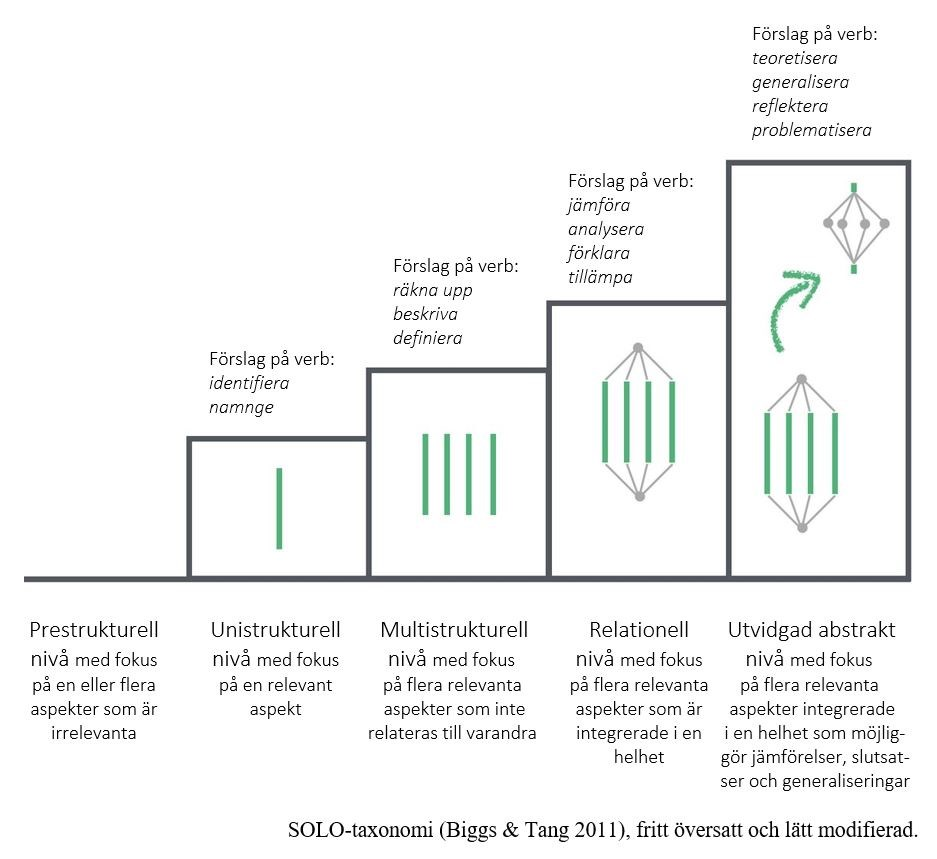
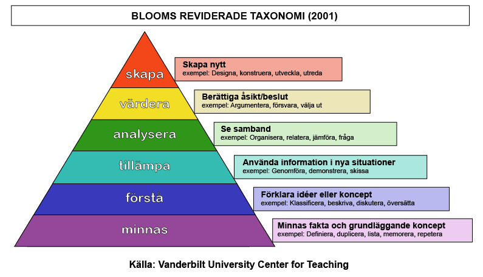

Scientific
dimension Citizen science dimension Socio-ecological
dimension
Process & feasibility outcome & impact
· Knowledge & attitudes (lärande/kunskap)
· Behavior & ownership
· Motivation & engagement (intresse)[OJ1]
Vårt syfte inkluderar också kapacitet – ska vi ev stryka detta ur Utvärderingsstudien och fokusera på kunskap, förändrat beteende (för mig = användande av kunskap) och motivation (=intresse)?
Kunskap – Taxonomier för lärande mål (används tex när man formulerar mål i kursplaner)
SOLO-taxonomin & Blooms taxonomi


Upplägg:
Digital före-efter-enkät till X antal äldre i Y antal lokala pensionärsföreningar, tex. Klippan och Staffanstorps PRO samt en lokalförening för Neuroförbundet Skåne och en lokalförening för Parkinsonförbundet Skåne. (=Max 4 föreningar).
Medlemmarna får enkäten via email och kan gå direkt in och besvara enkäten från sin email (Sunet Survey, Survey Monkey, Google forms eller likanande – kolla upp vad vi får använda).
Medlemmarna får enkäten sista veckan i augusti (eller i samma mail som BF2021-inbjudan??) samt uppföljningsenkäten inom några dygn efter att Bostadsförsöket 2021 stängt.
Vi måste ha en funktion som gör att vi kan koppla ihop första och andra intervjun (Hur?)
Våra deltagare har eventuellt (förhoppningsvis) sett reklam/media/nyhetsbrev för Bostadsförsöket 2021 när de får ut enkät nummer 1. När de får enkät nummer 2, har deltagaren haft chansen att delta i Bostadsförsöket, eventuellt har hen deltagit, förhoppningsvis sett mediainslag om BF2021 samt infor från egna föreningen. Om de har deltagit har de a) genomfört hela bedömningen b) ev sparat på en emailsammanställning av egna bostadens miljöhinder c) varit inne och använt analysverktyget på hemsidan
Förväntade learning outcomes skulle kunna vara:
|
Dimension |
Miljöhinder/tillgänglighet |
Forskninsgprojekt & Cit Sci |
Teknikanvändning |
|
Kunskap |
Ökade kunskaper om miljöhinder |
Ökade kunskaper om att delta i ett forskningsprojekt |
Ökade kunskaper i att använda en ny app |
|
|
Ökade kunskaper om hinder som orsakar tillgänglighetsproblem |
|
Ökade kunskaper om att använda en hemsida |
|
|
Ökad kunskap om egna bostadens miljöhinder |
|
|
|
|
Ökade kunskaper om egna bostadens tillgänglighetsproblem |
|
|
|
|
Ökade kunskaper om vikten av tillgängliga bostäder för hälsosamt åldrande[OJ2] |
|
|
|
Intresse/motivation |
Ökat intresse för frågor som rör tillgängligt boende |
Ökat intresse för att delta i Citizen science projekt |
Ökat intresse för att använda appar och hemsidor |
|
Beteende/engagemang |
Man använder kunskaperna om miljöhinder och tillgänglighet |
Man hjälper till att få flera att medverka i projektet |
Man laddar ner fler appar eller använder fler hemsidor |
|
|
|
Man sprider kunskapen från projektet till andra |
|
|
|
|
Man kan tänka sig delta andra forskningsprojekt |
|
|
|
|
|
|
ENKÄT 1
Bakgrundsfrågor:
· Födelseår:
· Kön: man/kvinna/ vill ej ange
· Förening man tillhör: ange de som vi kontaktat
· Typ av bostad (använd samma alternativ som i appen)
· Äger/hyr
· Antal personer i hushållet: 1,2,3,4,…
· Utbildningsnivå
· Tidigare erfarenhet av att delta i forskningsprojekt J/N
· Har du hört talas om Bostadsförsöket 2021 J/N
Hälsofrågor:
· Använder någon i hushållet regelbundet rollator eller rullstol a) inomhus b) utomhus?
· Funktionella begränsningar från Housing Enabler?
· Har du eller någon i hushållet fått veta av en doktor att du/den du bor med har…stroke, parkinson.. (standardiserad fråga från SNAC bla)
· Fallit senaste månaden / senaste året?
· Har någon i hushållet hemtjänst/matleveranser/larm?
Kunskapsfrågor, miljöhinder & tillgänglighet i egna bostaden och generellt:[OJ3]
Vi vill börja med att fråga dig några frågor om vad du känner till om miljöhinder i en bostad.
· I ett badrum kan finnas flera hinder, vilka av nedanstående anses vara miljöhinder/vilka av nedanstående finns i din bostad?
Utrymme 130 cm
Stödhandtag
81 cm handfat
Toalettstol 47 cm
Badkar
Nivåskillnad duschplats
Pall badbräda
· Anser du att du har några miljöhinder i din bostad (dvs i entréen, köket, badrummet och övriga ytor i bostaden)? Ange isåfall vilka. (Ett hinder per rad, men du kan ange så många rader du vill.
o Nej, det finns inga miljöhinder i min bostad
o Ja, ett hinder är…
o Ytterligare ett hinder är…
o Ytterligare ett hinder är…
· Anser du att din bostad är lämplig för en person som använder rollator inomhus?
o Ja
o Nej (Om nej, ange varför)
· En tröskel anses enligt vara ett miljöhinder om den är (klicka för det alternativ du anser):
0 mm – alla trösklar är miljöhinder oavsett höjd.
1 cm höga trösklar anses vara ett miljöhinder
1,5 cm höga trösklar…
2 cm höga trösklar…
· I ett badrum behöver det finnas svängrum, för att badrummet skall anses vara tillgängligt och utan miljöhinder. Hur stort fri yta/svängrum måste det finnas enlig direktiven?
100 gr 100 cm
130 gr 130 cm
200 gr 200 cm
Kunskap forskning:
Kunskap teknikanvändning:
Intresse/motivation tillgänglighet:
Intresse/motivation forskning:
Intresse/motivation teknik:
Beteende/engagemang tillgänlighet:
Beteende/engagemang forskning:
Beteende/engagemang teknik:
ENKÄT 2:
(Inga bakgrundsfrågor denna gång)
Deltog du i Bostadsförsöket 2021? Vilket påstående stämmer bäst in på dig?[OJ4]
Ja, laddade ner appen.
Ja, påbörjade mätningarna med appen.
Ja, genomförde mätningarna med appen.
Nej, jag deltog inte.
Som medforskare i Bostadsförsöket2021, kunde man ta del av resultaten på ett antal sätt. Markera de påstående som stämmer för dig. Obs du kan välja flera påståenden.
Efter mätningen önskade jag att få en sammanställning skickad med mail, på bostaden jag undersökt.
Jag har varit inne och tittat på Bostadsförsökets hemsidan där datan från alla mätningar sammanställs.
Jag har provat att filtrera fram data för just min kommun på Bostadsförsökets hemsidan där datan från alla mätningar sammanställs.
Inget av ovanstående stämmer in på mig.